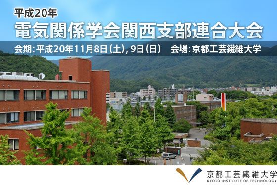

| 主催： | 電気学会｜電子情報通信学会｜照明学会｜映像情報メディア学会｜日本音響学会｜電気設備学会｜各関西支部 |
|---|---|
| 共催： | 京都工芸繊維大学 |
| このコンテンツをご覧になるにはAdobe Reader6.0以上が必要です。 左記バナーより無償で最新版をダウンロードできます。 Acrobat及びAdobe Readerは、Adobe Systems Incorporatedの登録商標です。 |
Kansai-section Joint Convention of Institutes of Electrical Engineering